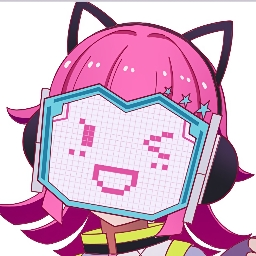

Skills & Expertise
AI & Machine Learning
- Neural Networks
- Singing Voice Synthesis
- Text-to-Speech
- Generative AI
Development
- Python
- Basic Web Development
- Usage of OpenAI-like APIs
- C#
AI Showcase
StableTTS Training
A somewhat comprehensive guide and implementation for training StableTTS models on Google Colab.
View ProjectNon-English Tacotron-2
Training notebook for Tacotron-2 models with non-English language support.
View ProjectYuE-exllamav2
Optimized implementation of multimodal-art-projection/YuE in exllamav2 now with a Colab notebook.
View ProjectContact
Feel free to reach out for collaborations or just to say hello!
Say Hello!

About Me
AI & Vocal Synthesis Enthusiast
Basic Information
Name
Usamireko/Sumi/Lin
Pronouns
Shhh, lets keep it as a secret c:
Location
Outside World
Occupation
University Student
Technical Background
Main Focus
AI & Vocal Synthesis
Languages
English, Spanish
Development
Python, C#, Web
Interests & Hobbies
Artificial Intelligence
Singing Voice Synthesis & Text-to-Speech
Open Source Development
Touhou Project
Bio
I'm a university student passionate about mixing technology and creativity. My vocal synthesis journey began as a kid when discovering Hatsune Miku, when AI and I crossed paths, I knew that I wanted to work with it as an adult. I love exploring the limits of what's possible with current technology and contributing to the community.